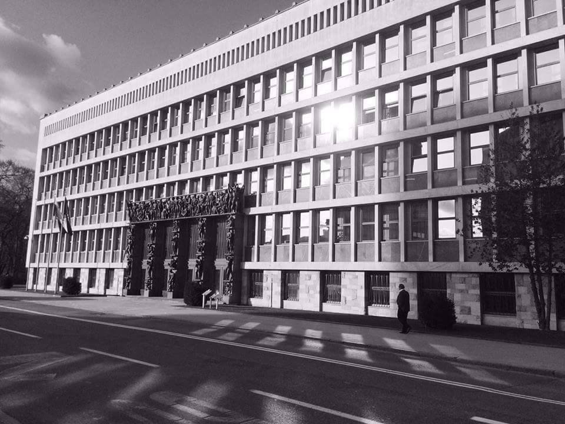

Že leta 2004 je bila uvedena štiridesetodstotna kvota za volitve v Evropski parlament, ki določa tudi, da mora biti vsaj en kandidat vsakega spola uvrščen na zgornji polovici kandidatne liste. Z letom 2006 je bil spremenjen tudi zakon za volitve v Državni zbor. V 43.členu določa, da od skupnega števila kandidatov in kandidatk na listi noben spol ne sme biti zastopan z manj kot petintrideset odstotkov. Iz Uradnega lista Evropske Unije lahko razberemo, da je cilj Evrope boljša politična zastopanost žensk. Navajajo razloge med njimi, da se udeležba žensk pri sprejemanju političnih odločitev v zadnjih letih ni izboljšala. Razmerje med ženskami in moškimi v nacionalnih parlamentih Evropske Unije je 24% žensk in 76% moških. Delež poslank v nekaterih državah je nižji od 15%, v celotni EU je delež ministric 23%.
